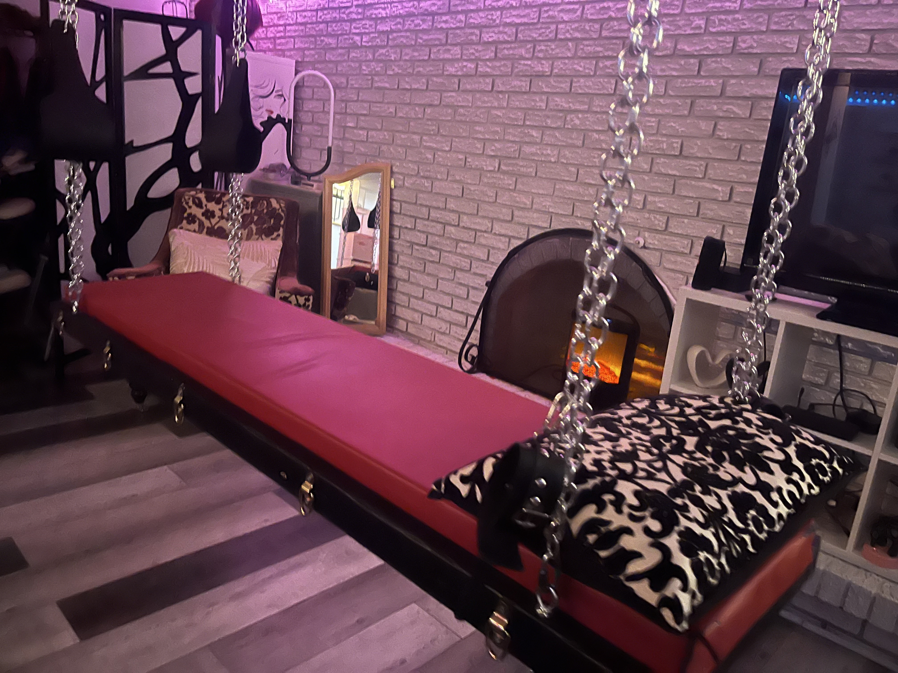
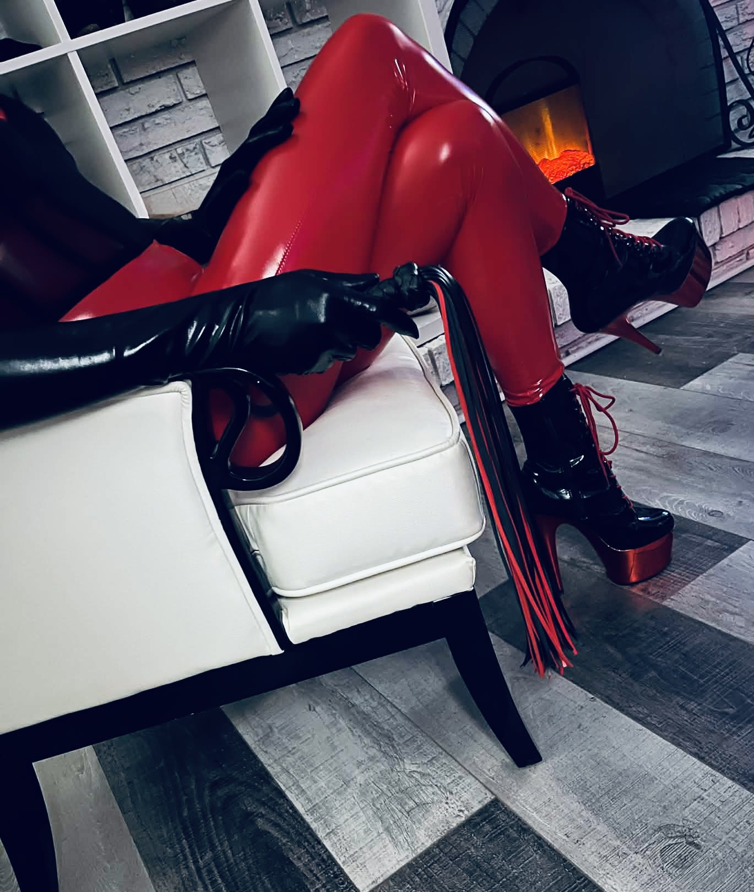
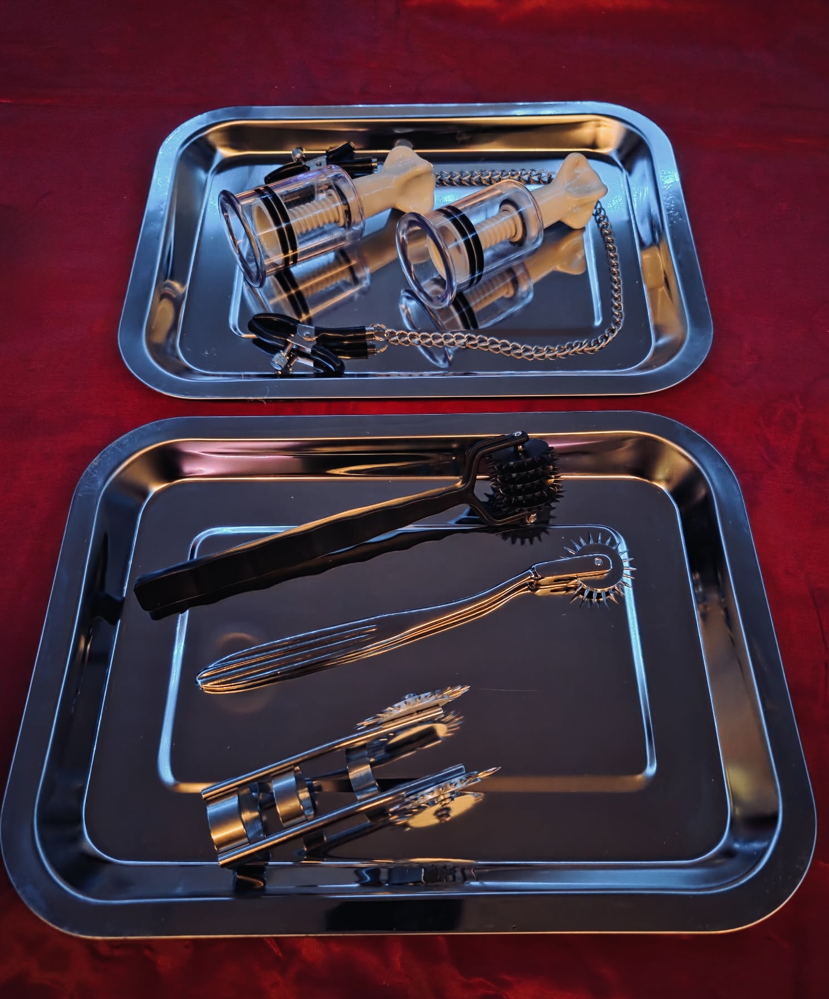
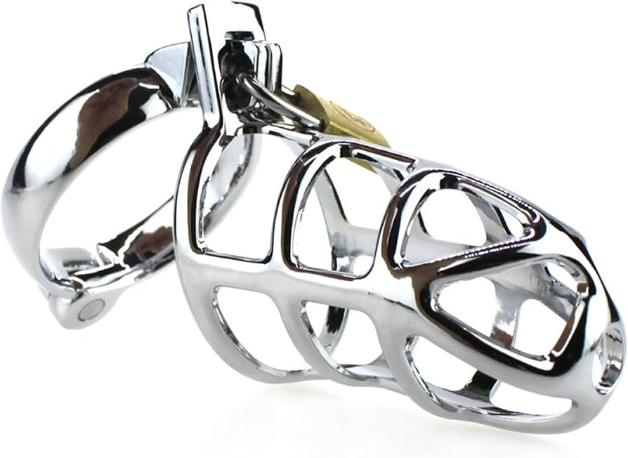
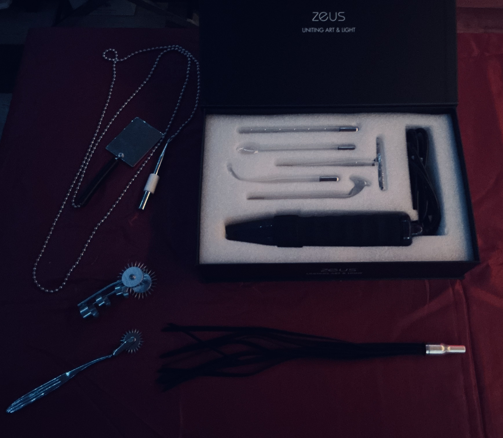
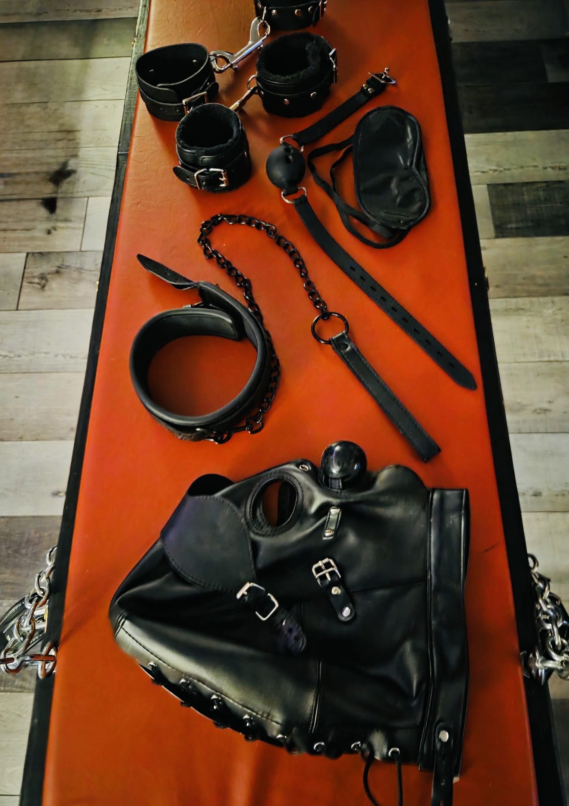
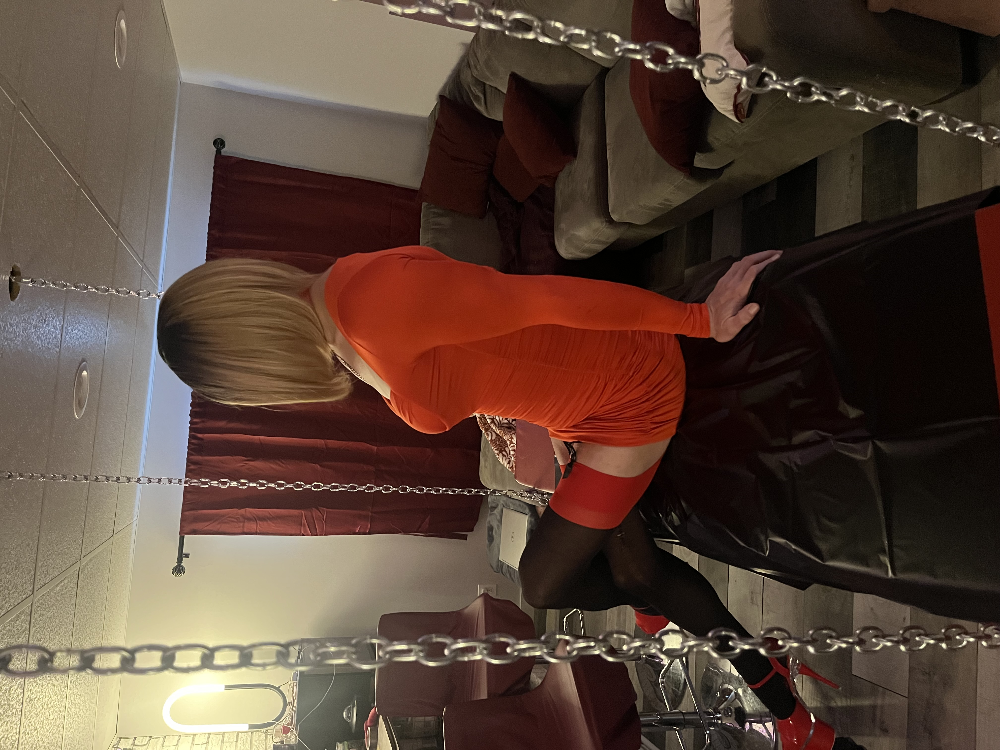

Photographie kinky
Nous réalisons des séances de photographie kinky immersives et personnalisées dans notre donjon ou dans tout lieu offrant une ambiance unique, afin de créer des images audacieuses et fidèles à votre univers.
Univers privé · Raffinement · Intensité
Un espace pensé pour celles et ceux qui recherchent une expérience encadrée, élégante et immersive, dans une atmosphère feutrée propre à Cuir & Fantaisies.
Découvrir les servicesUne esthétique assumée
Chaque rencontre s’inscrit dans un cadre où la présence, le rituel, la tension et la qualité de l’atmosphère occupent une place centrale. Cette page présente quelques avenues possibles, dans un esprit à la fois sophistiqué, structuré et distinctif.
Explorations possibles

Nous réalisons des séances de photographie kinky immersives et personnalisées dans notre donjon ou dans tout lieu offrant une ambiance unique, afin de créer des images audacieuses et fidèles à votre univers.

Nous proposons des expériences de contention encadrées dans un environnement sécuritaire et respectueux, adaptées à vos envies et à votre niveau de confort.

Nous offrons des expériences de jeux d’impact immersives et maîtrisées, où intensité, confiance et connexion occupent une place centrale.

Nous explorons les jeux médicaux dans une ambiance clinique immersive, axée sur le contrôle, la précision et la mise en scène sensorielle.

Nous créons des expériences sensorielles immersives jouant sur les contrastes, la privation et l’intensification des perceptions.

Nous proposons une exploration guidée du contrôle du plaisir, orientée vers l’anticipation, la vulnérabilité et les sensations profondes.

Nous offrons des expériences d’électroplay encadrées et immersives, axées sur les sensations, la confiance et le lâcher-prise.

Nous proposons des expériences de domination immersives, centrées sur la dynamique d’autorité, le contrôle et l’interaction.

Nous accompagnons des expériences de féminisation assumées, axées sur la transformation, la présentation et l’exploration de nouveaux repères.
Et plus encore…
Certaines avenues se prêtent mieux à un échange préalable afin de préserver la cohérence, le cadre et la qualité de l’expérience recherchée.
Prochaine étape
Pour en apprendre davantage sur le cadre, les possibilités ou l’orientation d’une rencontre, il est possible de faire une demande en passant par la page prévue à cet effet.
Accéder à la réservation